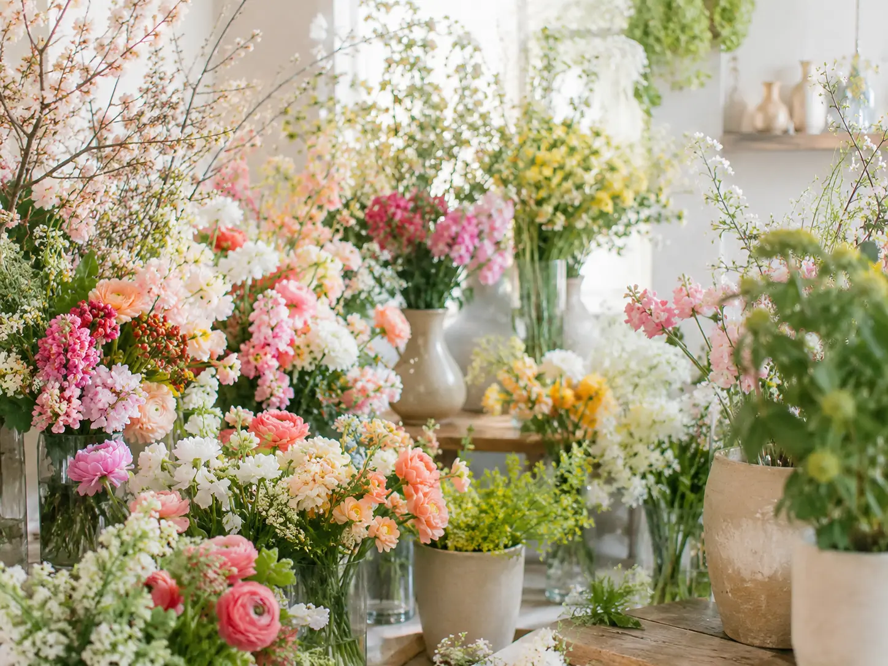
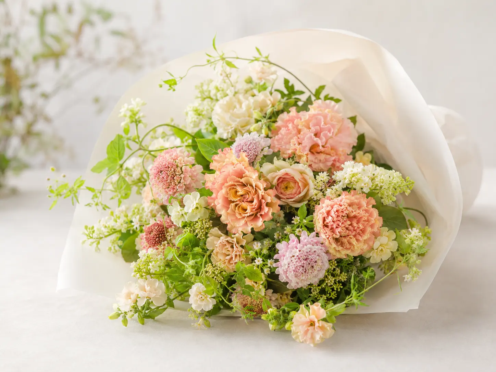
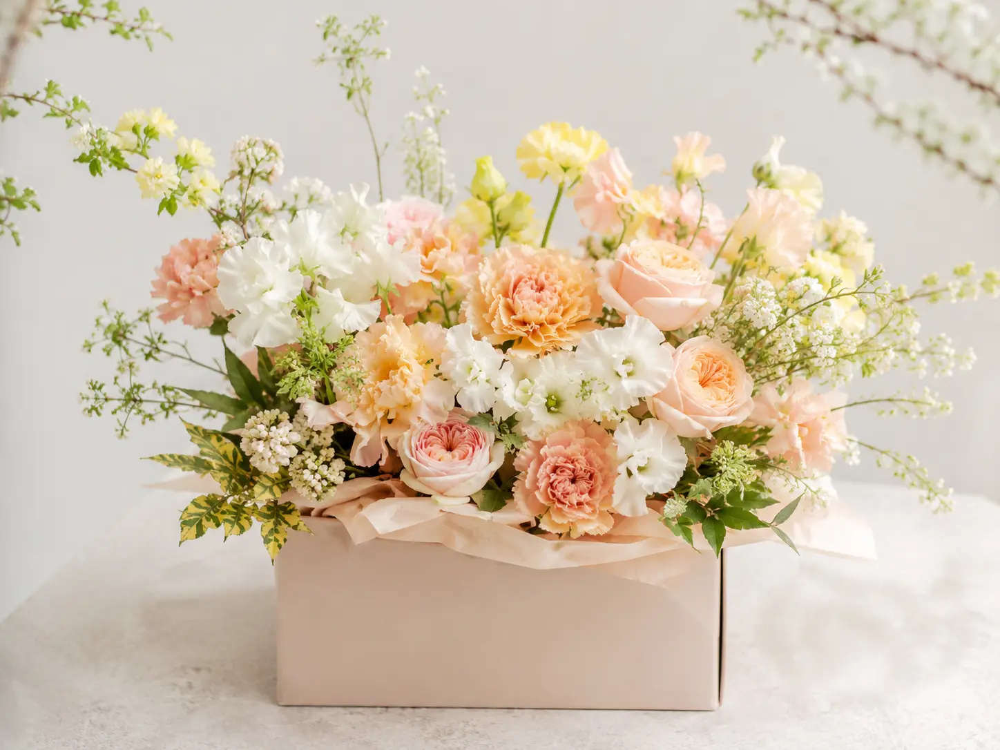
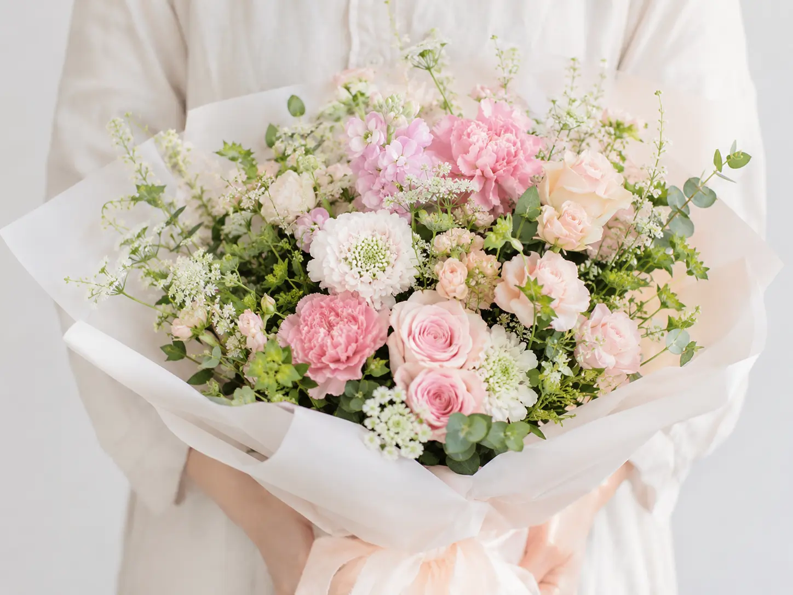
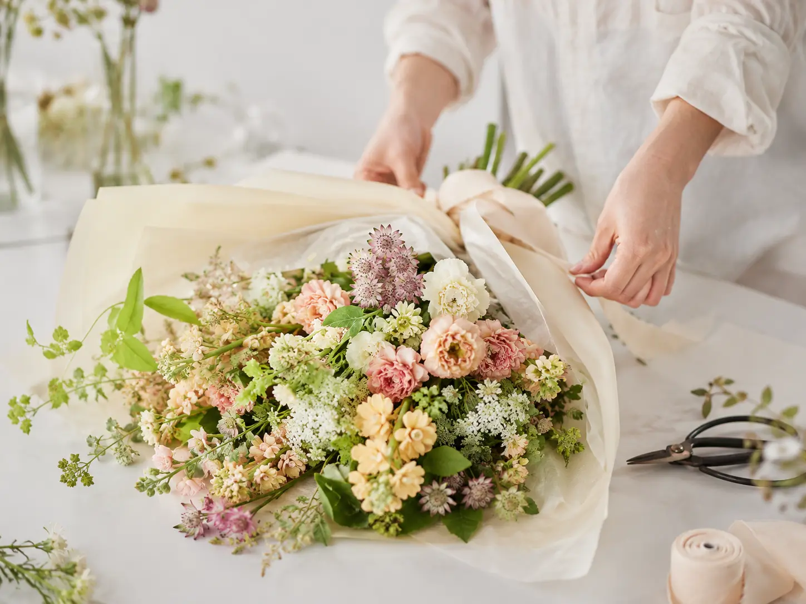
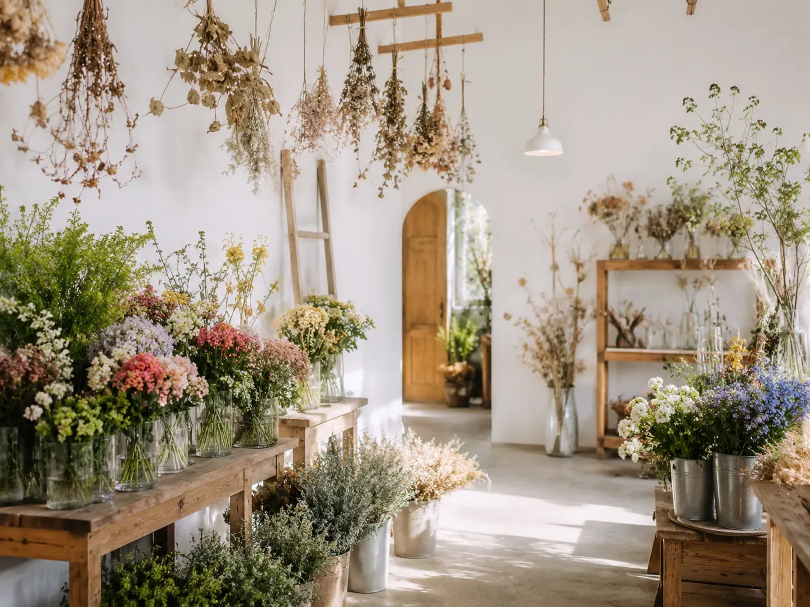
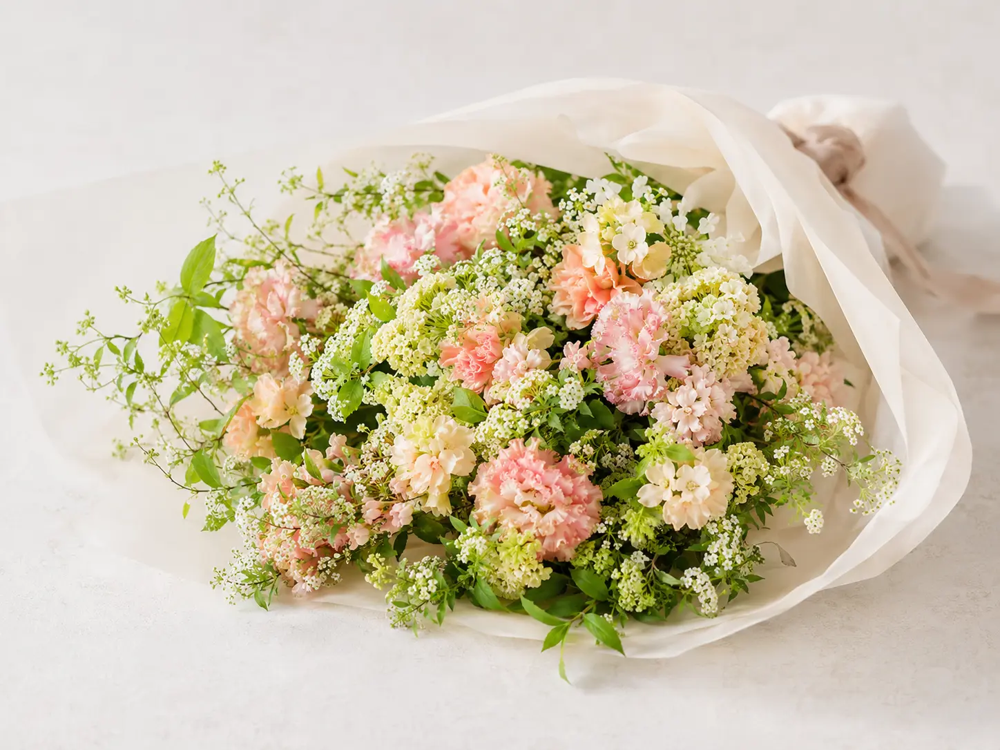

季節のブーケ
市場で選んだ旬の花をその時いちばんの形で。

Concept
「花と暮らし KOTORI」は、季節の花を通して日常に小さなときめきを届ける花屋です。
市場で出会ったその時いちばんの花を選び、一つひとつ心を込めて束ねています。
大切な人への贈りものにも、ご自宅の彩りにも。花がそっと寄り添う、うたたかな時間をお届けします。
市場で選んだ旬の花をその時いちばんの形で。
お祝い、記念日、お悔みなど用途に合わせてご提案。
店頭受け取りはもちろん、全国配送にも対応しています。
Bouquet & Gift

季節のブーケ
季節の花を束ねたブーケ。ご自宅用にもギフトにも人気です。
¥5,500〜
ギフトアレンジメント
器にアレンジした華やかな贈りもの。開店祝いや記念日におすすめ。
¥6,600〜
お祝い花束
記念日や発表会など特別な日に。想いを込めてお作りします。
¥7,700〜
Order made
花の表情はひとつとして同じものはありません。その日の状態を見極めながら、花がいちばん美しく見えるように束ねています。
ご希望に合わせたオーダーや、特別な日のご相談もお気軽にお声がけください。
オーダー・ご相談はこちらShop
季節の生花やグリーン、ドライフラワーを取り揃えた店内。
光が差し込む心地よい空間で、ゆっくりと花をお選びいただけます。お気軽にお立ち寄りください。
店舗について
